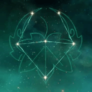

Un samurái errante de Inazuma que actualmente se hospeda en la Flota Crux Meridianam de Liyue. El corazón de este amable y libre joven encierra sus muchas cargas del pasado.
Artefacto/s recomendados


Maestria / Energia%

Bono Anemo / Maestria

Maestria
Maestria > Energia% > Atq%
Talentos
Pasivas
Constelación
Armas Recomendadas

Personajes compatibles